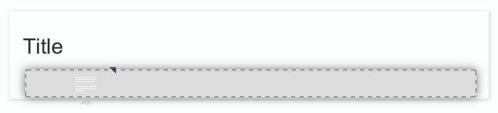

Widgets
The UI Designer is a tool for creating pages and forms to use in a BPM application.
A form is mapped to process instantiation or to a human task and must fulfill a contract. To gather the inputs that will be sent to the contract, it embeds input fields and a submit button. A page is not mapped to any part of a process, it displays business information and gives access to forms or action buttons that send information to the process. Besides this, there is no difference between a page and a form, so the procedure for designing them is the same. This documentation uses the term page for both pages and forms, unless otherwise stated.
Page structure
A page consists of widgets that are arranged in rows, and optionally, containers. The UI Designer provides a set of default widgets that you can use to design a page. The default widgets are available from the palette panel, which is on the left side of the Page editor. A widget has properties that control how it appears and how it is used. There are some general properties that all widgets have, and some properties that are specific to the widget type. You can also create custom widgets.
Each widget in the palette has a description. To show a widget description, just roll over the widget in the palette.
Containers
A container is a widget that contains other widgets. You can create nested containers. A typical use for containers is to control the main layout of your page. For example, if you want to create a two-column layout, you will start your page by adding two containers on the same row, each one spanning six columns of the page. A page does not need to have a container, but it is useful.
By default, a container contains one row, where you can drop component widgets or containers. You can also make the page layout dynamic by repeating a container to display a collection of data.
Adding a widget to a row
If the row has some space at the end, the widget will fill the remaining empty space in the row. If the row has no empty space, the dropped component will be automatically resized to fit a row width.
Adding a row
According your needs, a container can have any number of rows.
To add a widget in a new row, a container has two dropzones where you can drop a widget from the palette. These dropzones are located at the top of the container and at the bottom of the container. When your mouse hovers the upper or lower border of a widget in a row, the dropzone becomes visible, as shown in these examples:
Example 1: add a title widget in a new row above a paragraph widget:

Example 2: add a paragraph widget in a new row below a title widget:

When you drop a widget in one of these two zones, a new row is automatically created.
Repeat content
A container can repeat the content dynamically. This is useful if you need to repeat a set of components for each element in a data collection. Bind the Repeat content property to an array variable. To specify the current element of the collection, use $item.
This is useful if you want to display some property of the current element.
Save as fragment
If you are using the Performance, Efficiency, or Teamwork edition, you can save any container as a fragment. This enables you to reuse the set of widgets in other pages.
Tab container widget
Use the tab container to structure a page using tabs. To edit a tab name, select the corresponding tab to display its properties.
Each tab is a container widget.
Form container widget
Use the form container to enable form validation for input widgets. The form container also exposes a local $form which is the AngularJS form object associated to the form container. In the Bonita Studio, if you define a contract for the task or process and click on the UI Designer icon, the generated form already contains a form container to embed default input widgets to collect the information that need to be passed to the contract to be verified. You can then define the validation you need on the input.
For example, you can bind the button’s disabled property to $form.$invalid to prevent user from clicking the button, until the form inputs are valid.
Input widgets
Use an input widget to enable a user to provide input. In addition to the general widget properties, all input widgets have the following:
- A Required property which prevents button from being clicked when put inside a form container
- A Read-only/disabled property which prevents the user from modifying the value
- A Label (which can be hidden)
- A property to specify whether input is mandatory
- A Value property that is used to capture the value entered by the user.
The sections below describe the available input widgets.
Plain input widget
Use the input widget on a form or page. There are four types of input:
- text: a free-form text field
- email: an email address
- number: a decimal or integer number
- password: like text but each character is replaced by an asterisk.
Text area and rich text area widgets
Use the text area input widgets on a form or page to collect large text.
The rich text area allows the user to format and style their input, add images, links, and so on.
You can customize the toolbar for the end-users by selecting options among the available values of the toolbar properties.
Autocomplete widget
Use an autocomplete widget to offer the user a list of possible values based on data entered in the field. For example, in a firstName field, if the user types chri, the values chris, christine, christian, christiane are proposed. The user selects the correct value. To define the available values, bind a data source to initialize the suggestions. For suggestions that are an array of objects, you can specify a displayed key to identify the attribute to show as a suggestion in the widget. The value must be bound to a variable that will hold the selected suggestion.
Select widget
Use a select widget to offer the user a drop-down list of values. The user selects the required value.
The available values property is used to populate the list of available values. Alternatively for simple data, you can provide a comma-separated list of values (for example, red, green, blue).
You can also use data binding and specify a variable to populate the list of available values. In this case, specify a label key, which identifies the attribute to be displayed in the widget.
Checkbox widget
Use a checkbox widget to create a unique checkbox. The value property will be true or false, depending on the checked value of the checkbox.
Checklist widget
Use a checklist widget to create a set of checkboxes for the available values, from which the users picks any number of values. To define the available values, you can provide a comma-separated list for simple values (for example: red, green, blue), or bind to a variable that holds an array of values.
If the values are JavaScript objects, you can also specify a displayed key that identifies the attribute to be used to label the checkboxes and a returned key so selected value will return only a specific key rather that the whole corresponding object.
The selected values are captured through the Selected values property.
Warning: Do not bind the Selected values property to a specific item from the available values collection because selected values will be updated each time you modify a checkbox. Do not bind the Selected values to the Available values collection, because this could lead to unexpected behaviors.
Radio buttons widget
Use a radio button widget to create a set of radio buttons for the available values, from which the user picks one value.
To define the available values, you can provide a comma-separated list for simple values (for example: red, green, blue), or bind to a variable that holds an array of values.
If the values are JavaScript objects, you can also specify a displayed key that identifies the attribute to be used to label the radio buttons and a returned key so selected value will return only a specific key rather that the whole corresponding object.
The selected value should be bound to a variable that will hold the data for the chosen radio button.
Date picker widget
Use a Date picker widget to display a calendar from which the user can select a date or set a date manually (e.g., a date of birth).
To select a date and a time (e.g., to schedule a meeting), use the Date time picker widget instead.
The Date picker widget supports the following types for its Value property as input:
- ISO 8601 String variables (with or without time information)
- Date objects
- Long number values (Milliseconds since epoch)
However, the output of the widget is always a Javascript Date object. So it will change the type of the variable bound to the widget Value to a Date object when the user selects a date. This is required in order to ensure backward compatibility for pages designed with older UI Designer versions.
When sent in the JSON body of a request, the Date object is serialized into an ISO 8601 formatted String variable with the time set to midnight UTC (e.g., 2016-12-31T00:00:00.000Z).
You can configure the displayed date format using a pattern, using yyyy for year, MM for Month, dd for day.
Use the Today button to select automatically and quickly the current day.
For more information about supported formats, read the Angular documentation for date filter.
For a detailed example using the Date picker widget, you can consult the following Howto: Manage dates and times in BDM and User Interfaces.
In the Subscription Edition, the calendar can be localized with the usual localization mechanism (localization.json file).
Date time picker widget
Use a Date time picker widget to display a calendar from which the user can select a date and a time or set them manually (e.g., to schedule a meeting).
To select only a date (e.g., a date of birth), use the Date picker widget instead.
Date and time can reflect the user time zone (e.g., a meeting day and time) or be absolute, identical everywhere (e.g., opening hours of a store somewhere). This is controlled by the property Handle time zone.
The input/output of the widget (its Value) is an ISO 8601 formatted String variable (e.g., “2016-12-31T16:30:00.000Z”).
You can configure the displayed date format using a pattern, using yyyy for year, MM for Month, dd for day, HH or h for hours, mm for minutes, ss for seconds.
Use the Today and Now buttons to select automatically and quickly the current day and time.
For more information about supported formats, read the Angular documentation for date filter.
For a detailed example using the Date time picker widget, you can consult the following Howto: Manage dates and times in BDM and User Interfaces.
In the Subscription Edition, the calendar can be localized with the usual localization mechanism (localization.json file).
File upload widget
Use an upload widget to perform a file upload (POST) on the specified URL. Data returned by the server is stored in the value property.
Button widget
Use a button widget to enable to user to trigger an action. The button can perform a PUT, POST, GET (from 7.1.3), or DELETE (from 7.1.3) request and send data to a given URL.
You can use a variable to hold the resulting data after success or failure.
For pages that are displayed in a task or process context, the button widget can be used to submit a form, completing the human task or starting a process instance. For form submission, you need to define only the data to send. The URL is extracted from the context.
Finally, you can use the widget button to add or remove a data from a given collection.
When inside a form container, the button is automatically disabled while the form is invalid.
Display widgets
Use a display widget for information that the user can read on a page. This includes titles, paragraphs, and text. For each, you can specify the text and its alignment. There are several types of display widgets:
- File viewer, to display a preview of files, either Bonita documents, or external documents. Users can also download the file thanks to this widget.
- Link, to embed an HTML link for navigation to an external site.
- Title, for headings. You can set the level from 1 to 6.
- Text, for chunks of text. Text supports basic HTML tags such a paragraph, list or image…
Table widget
Use a table widget to display data in a table. In order to display the data, first define the headers property with a comma-separated list of column headings.
Then bind the content to an array of JavaScript objects.
Finally, provide a comma-separated list for the columns keys indicating the attribute to display in each column.
To get the data from a selected row, bind selected row to a variable.
Note: table widget only supports text values. HTML content passed in table data will not be rendered.
Data table widget (Subscription editions)
An extended table widget that provides column sorting, filtering, and paging in addition to the standard table widget facilities.
Set the Data source to Bonita API to populate the data table with records from a Bonita REST API.
Then enter a REST API URL in the URL property. Use the API request parameters property to pass additional parameters to the request.
Supported parameters are described in the REST API Overview and in the REST API documentation for the relevant resource.
You do not need to specify paging parameters (such as ?p=0&c=10), because the data table handles paging automatically when you use a Bonita API data source.
The value of the Page size property controls how many rows are displayed in a table view, and automatically adds buttons to show subsequent pages of the table.
Alternatively, you can set the Data source to Variable and use a variable definition to point ot the table content.
Note that if you use a Variable datasource and an External API variable, the paging of the table content is not handled automatically.
Sort
The Sortable columns property enables to list the columns which allow a sorted search.
Each element of this property has to match an element of the Columns key property to figure out which table column can be sorted upon.
When a data table is displayed (including in the Preview), the user can click on a column heading to reorder the table rows by this column.
Some fields do not support sorting but still display the sort button which is a known limitation.
The ordering applies to the visible rows in the table, not to the entire table.
The sort is backend when datasource is Bonita API. It is frontend, otherwise.
Note: BDM APIs are not yet sortable. For other APIs, test in the preview or refer to the BonitaBPM documentation ‘REST API’ pages.
Filter
You can provide a filter for users to update the displayed table to show only the rows that match the filter. To do this:
- Add a widget to the page where the user will specify the filter. This can be an Input widget for free-form text, or a Select widget to choose from a preset list.
- Create a filter variable in the variable panel. If you are using an Input widget, this variable has no value.
- Bind the filter variable to the widget.
- Bind the filter variable to the Data table widget Filter property.
When the table is displayed, each time the user updates the filter, the table display is updated accordingly. The filter is applied to the table rows that are currently displayed.
Note: it is only possible to filter on attributes that are searchable in the REST resource definition. To search on an attribute of a business object, make sure that the BDM contains the necessary queries.
Image widget
Use an image widget to display an image. The image widget is able to display images from local assets or an image from a URL:
- To use an image asset in the image widget, set the Source type property to Asset, and then enter the image name in the Asset name input field.
- To use an online image in the image widget, set the Source type property to URL, and then enter the image URL in the URL input field.
Note: Applies from 7.0.2
Chart widget (Subscription editions)
Use the chart widget to create a graphical display of data to ease understanding. This widget is based on angular-chart-0.8.1, which is based on Chart.js.
For information, see the Angular chart documentation or Chart.js documentation.
The widget can display several styles of chart:
- For a single set of data points:
- Bar
- Line
- Radar
- For one or more sets of data points:
- Pie
- Doughnut
- Polar area
Provide each set of data for display in a JSON array, containing numeicral values.
You can enter a single array directly in the Value property, or bind it to any variable that provides an array.
For a multiple set chart, bind it to any variable that provides an array of arrays, all sets having have the same length.
The list of values in the Labels property must be have same length as an associated set.
Charts can be customized more deeply using the Advanced options property. To specify advanced options, bind this property to a JSON variable that specifies the options.
Options are specific to each chart type and are listed in the Chart.js documentation in the Chart options section for each chart style (for example, there are spacing options for bar charts).
File viewer widget (Subscription editions)
Use the file viewer widget to preview or download a file or a process document in any UI Designer artifact (page or form for instance). You can display a document in a modal dialog box or directly in a page.
The previewable documents are limited to documents supported by the end user browser (by default pdf and images on usual browsers). Documents that are not previewable are prompted to be downloaded.
Rich Text Area widget (Subscription editions)
Use the rich text area widget to edit HTML formatted text in any UI Designer artifact (page or form for instance).
You can add rich text area inputs for end users to create text to be exported in HTML format for integration on emails, etc.
It can be prefilled with an HTML template.
A options toolbar exposed to end users can be customized and localized with the usual localization mechanism (localization.json file).